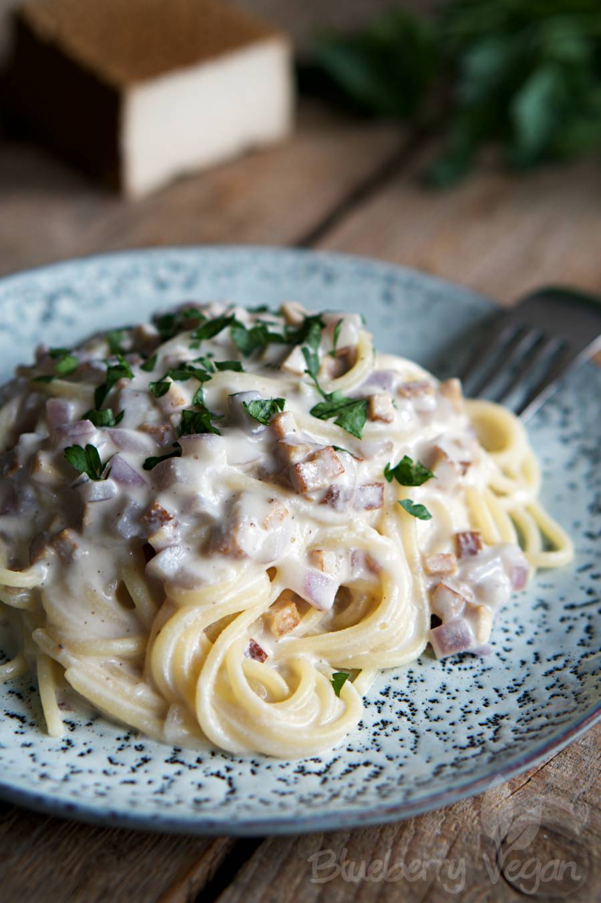

Creamy Spaghetti Carbonara

Eggs, chese, somtimes cream and bacon - a classic carbonara in anything
gut animal free. But this doesn´t mean that a delicious carbonara can´t be vegan.
This is such a delicious vegan carbonara and I could take a bath in it!
Ingredients
- 200 g smoked tofu
- 1 small red onion
- 1 clove garlic
- 1 tsp oil
- 40 g white almonds
- 300 ml water
- 0.25 tsp Kala Namak
- 2 tbsp nutritional yeast flakes
- salt
- white pepper
- 2 dashes lemon juice
- 250 g Alnatura dinkel spirelli
Steps
- dice the onion, garlic and smoked tofu.
Then fry the tofu with a little oil in a pan until hot.
After a short time, add the onion and garlic.
- Blend 300 ml of chamois broth together with the almond meal,
Kala Namak and yeast flakes in a blender to a creamy sauce.
- Once the onions are sautéed until translucent,
deglaze with the sauce and simmer on low for a few more minutes.
- Then add a squeeze of lemon and season
to taste with salt and pepper.
- Cook the spaghetti according to the
package instructions until al dente.
- Arrange everything together.